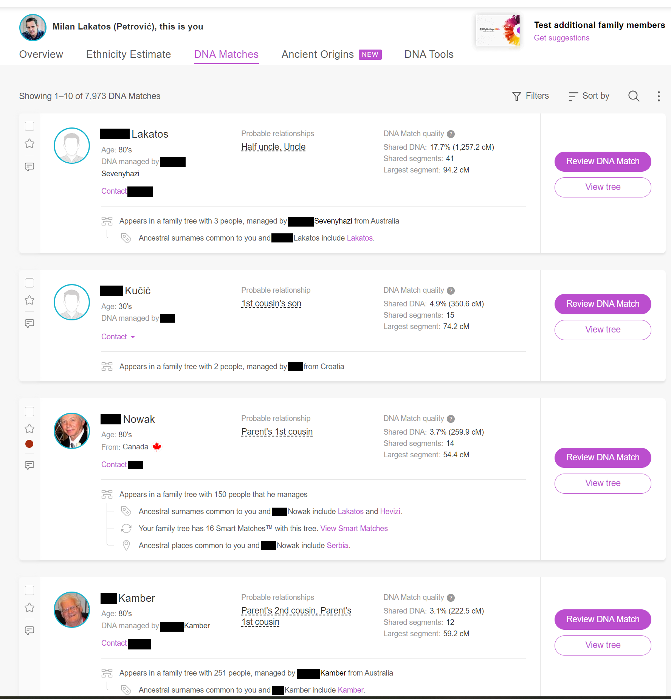
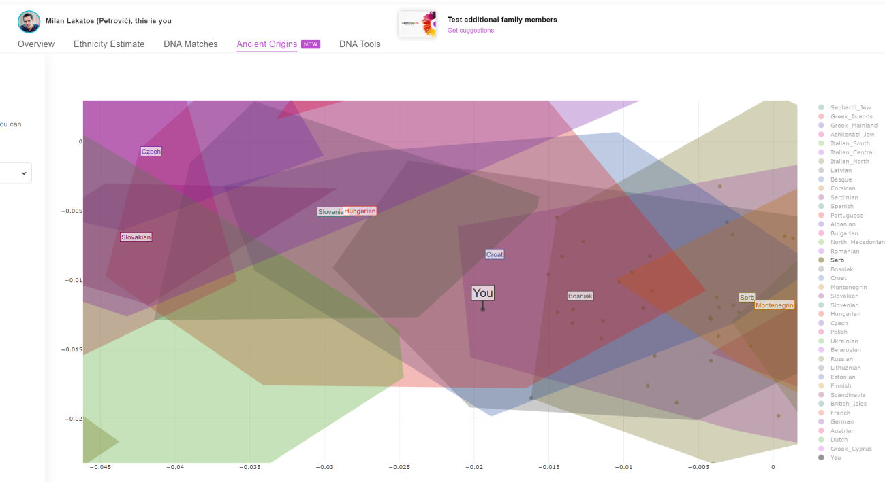

Genetsko i povijesno podrijetlo Milivoja Miletića: dokaz nezakonitog usvojenja i nasilne asimilacije
Potpuni prijevod autorove analize na šest stranica, uključujući njegove opise dviju ugrađenih slika. Pravni, povijesni i genetski zaključci preneseni su kao njegova argumentacija. Sam dokument nema datum. Osobna imena DNK rođaka i upravitelja računa redigirana su; prezimena i srodnički odnosi sačuvani su. Javni redigirani izvorni PDF.
Izvorna stranica 1 — Potpuni prijevod
Genetsko i povijesno podrijetlo Milivoja Miletića: dokaz nezakonitog usvojenja i nasilne asimilacije
„Ovaj dokument pokazuje ozbiljnost moje tvrdnje o etničkom podrijetlu i nacionalnoj pripadnosti, kao i činjenicu da ovu temu shvaćam krajnje ozbiljno i ne pristajem na krivotvorenje svojeg identiteta. Također potvrđuje da je postupak mojeg usvojenja bio nezakonit, a promjene mojeg imena, podrijetla i nacionalnog identiteta rezultat administrativnog nasilja, s dugotrajnim posljedicama za moj pravni i osobni status.”
Uvod
Identitet pojedinca temeljno je ljudsko pravo zajamčeno međunarodnim konvencijama i domaćim zakonodavstvom. U slučaju Milivoja Miletića, po ocu Lakatoša (službeno i nezakonito Milana Petrovića), pravo na istinski identitet ugroženo je nezakonitim usvojenjem i prisilnom asimilacijom u srpski etnički identitet, koji u njegovu slučaju nema nikakvo genetsko, povijesno ni kulturno uporište.
Genetske analize, povijesni podaci i pravno-administrativne činjenice potvrđuju pravo etničko podrijetlo i kulturnu pripadnost, sustavno krivotvorene i brisane iz političkih i pravnih razloga. Taj je proces počeo nakon ostavinske rasprave, kada je iznesen podatak da iza pokojnog Pala Lakatoša postoji još jedan nasljednik: tada petogodišnje dijete Milivoj Miletić, kojeg je Pal čuvao do svoje smrti i priznao za sina, što je poslije dokazano posrednim genetskim biljezima. Od tog trenutka počinje pravni i administrativni cirkus s ciljem brisanja djetetova identiteta i sprječavanja ostvarivanja nasljednih, osobnih i nacionalnih prava, uključujući pravo na etničku pripadnost, jezik kojim je govorio — mađarski — i sve druge aspekte njegova kulturnog i obiteljskog naslijeđa.
1. Genealoški kontekst i pitanje asimilacije
Milivoj Miletić sin je Cvite Miletić (Hrvatice iz Dalmacije) i Pavla (Pala) Lakatoša (Mađara). Njegovo je podrijetlo nedvosmisleno hrvatsko-mađarsko, ali je nezakonitim usvojenjem i administrativnim manipulacijama nasilno asimiliran u srpski identitet.
Ključni pravni i povijesni argumenti:
- Njegova biološka obitelj nikad nije bila dio srpskog etničkog korpusa, što znači da je promjena etničkog identiteta bila prisilna i provedena bez osnove.
- Njegovo usvojenje i promjena imena služili su kao sredstvo brisanja njegova pravog podrijetla.
Izvorna stranica 2 — Potpuni prijevod
- Proces je dio šireg obrasca nasilne asimilacije, dokumentiranog i u drugim slučajevima nezakonitih usvojenja u bivšoj Jugoslaviji i diljem Europe.
- Važna usporedba: u povijesti je mađarizacija često bila dobrovoljna, dok je u ovom slučaju riječ o prisilnoj asimilaciji, sličnoj sustavu devširme u Osmanskom Carstvu, u kojem su djeca nasilno odvajana od svojih etničkih i kulturnih korijena.
- Zaključak: ovo nije običan slučaj usvojenja, nego primjer etničkog brisanja pravnim manipulacijama.
2. Genetska analiza podrijetla
DNK analiza provedena putem MyHeritagea, 23andMea i Y-STR analiza nedvosmisleno potvrđuje podrijetlo:
2.1. Očinska linija (Y-DNA) — haplogrupa I-S17250
- Pripada skupini I2a1a2 (sjevernoj varijanti I2), koja je dominantna među srednjoeuropskim narodima.
- Ova haplogrupa NIJE karakteristična za etničke Mađare ugrofinskog podrijetla, što znači da su Lakatoši vjerojatno bili dio srednjoeuropskih populacija koje su se poslije asimilirale u mađarsku kulturu.
- Najveća koncentracija ove haplogrupe nalazi se u:
- Sjevernoj Hrvatskoj;
- Vojvodini;
- Mađarskoj;
- Slovačkoj i Češkoj;
- Ne među južnobalkanskim Srbima.
- Zaključak: Milivoj Miletić nije dio srpske muške linije, nego pripada srednjoeuropskim narodima, s kasnijom asimilacijom u mađarsko okruženje.
2.2. Majčinska linija (mtDNA) — haplogrupa HV6a
- Prisutna u Dalmaciji, Italiji, Grčkoj i na Bliskom istoku.
- Nije tipična za slavenske narode Balkana, nego je dominantna među Dalmatincima, Ilirima i mediteranskim populacijama.
- Potvrđuje obiteljske podatke da je autorova majka Hrvatica iz Dalmacije.
- Zaključak: majčinska linija pokazuje dominantne mediteranske i dalmatinske korijene, potpuno nespojive s administrativno nametnutim „srpskim” identitetom.
3. Etnička procjena putem autosomalne DNK
Genetske analize pokazuju sljedeće postotke:
Izvorna stranica 3 — Potpuni prijevod
- 52,4 % balkanskog podrijetla (Hrvatska, BiH, Srbija) — dominantno podrijetlo iz Dalmacije i Panonije.
- 31,4 % istočnoeuropskog podrijetla (Mađarska, Poljska, Slovačka, Češka) — potvrđuje srednjoeuropske korijene unutar Mađarske.
- 9,4 % grčko-albanskog podrijetla — mogući dalmatinski ili vlaški tragovi.
- 4,1 % baltičkog podrijetla — karakteristično za Slavene.
- 2,7 % germanskog podrijetla — vjerojatno austrijsko-njemački utjecaj u Panoniji.
Zaključak
DNK analiza jasno pokazuje da Milivoj Miletić NIJE genetski Srbin, nego pripadnik srednjoeuropskih naroda, dominantno hrvatsko-mađarskog podrijetla.
4. Povijesni kontekst asimilacije
- U doba Habsburške Monarhije i Jugoslavije bilo je slučajeva dobrovoljne mađarizacije, ali ne nasilne promjene identiteta usvojenjem, što ovaj slučaj čini posebnim.
- Nezakonito usvojenje Milivoja Miletića nije rezultat prirodne asimilacije, nego nasilne promjene etničkog identiteta administrativnim manipulacijama.
- Njegov je identitet administrativno krivotvoren, a pravo na biološku pripadnost oduzeto.
Zaključak i daljnji koraci
- Nezakonito usvojenje Milivoja Miletića bilo je pravni čin nasilne asimilacije, a ne stvarni postupak usvojenja u interesu djeteta.
- DNK analiza potvrđuje njegovo nesrpsko podrijetlo i negira bilo kakvu osnovu za etničku pripadnost srpskom korpusu.
- Daljnji pravni koraci uključuju:
- Sudske postupke za povrat identiteta;
- Obraćanje međunarodnim institucijama za zaštitu ljudskih prava;
- Međunarodni medijski pritisak radi javnog razotkrivanja sustavne zlouporabe u takvim slučajevima.
Zaključna rečenica
Istina je sada jasno dokazana — Milivoj Miletić NIJE Srbin, nego Mađar i Hrvat čiji je identitet nasilno promijenjen administrativnim manipulacijama.
Izvorna stranica 4 — Potpuni prijevod
Prilog: DNK analiza

[Ugrađena slika: snimka zaslona računa s DNK podudaranjima. Sljedeća tablica urednički je prepis vidljivih podataka o podudaranjima; autorov opis slijedi ispod nje.]
Snimka zaslona nosi naslov „Milan Lakatos (Petrović), this is you” i „DNA Matches” te pokazuje „1–10 od 7.973 DNK podudaranja”.
| Profil (osobno ime redigirano) | Prikazani vjerojatni srodnički odnos(i) | Zajednička DNK | Zajednički segmenti | Najveći segment |
|---|---|---|---|---|
| [redigirano] Lakatos | Polubrat roditelja („Half uncle”); stric ili ujak („Uncle”) | 17,7 % (1.257,2 cM) | 41 | 94,2 cM |
| [redigirano] Kučić | Sin bratića ili sestrične („1st cousin’s son”) | 4,9 % (350,6 cM) | 15 | 74,2 cM |
| [redigirano] Nowak | Bratić ili sestrična roditelja („Parent’s 1st cousin”) | 3,7 % (259,9 cM) | 14 | 54,4 cM |
| [redigirano] Kamber | Drugi rođak roditelja („Parent’s 2nd cousin”); bratić ili sestrična roditelja („Parent’s 1st cousin”) | 3,1 % (222,5 cM) | 12 | 59,2 cM |
Ostali vidljivi podaci o profilima: profil Lakatos navodi dob u osamdesetima i obiteljsko stablo s tri osobe kojim se upravlja iz Australije, uz zajedničko prezime predaka Lakatos. Kučić navodi dob u tridesetima i stablo s dvije osobe kojim se upravlja iz Hrvatske. Nowak navodi dob u osamdesetima, Kanadu, stablo sa 150 osoba kojim sam upravlja, zajednička prezimena predaka Lakatos i Hevizi, 16 podudaranja Smart Matches između stabala i Srbiju kao zajedničko mjesto predaka. Kamber navodi dob u osamdesetima i stablo s 251 osobom kojim se upravlja iz Australije, uz zajedničko prezime predaka Kamber. Osobna imena upravitelja računa redigirana su u javnom izvoru.
Opis slike (DNK analiza — obiteljske veze)
„Ova slika prikazuje DNK podudaranja između mene, Milivoja Miletića, i mojih bioloških rođaka te jasno potvrđuje moje genetsko podrijetlo. Na slici su navedeni:
- [redigirano] Lakatos — moj rođeni stric (brat mojeg oca), s kojim dijelim 17,7 % DNK, što je u skladu s očekivanim genetskim podudaranjem za tu srodničku vezu.
- [redigirano] Kučić — sin moje rodice (kćeri majčina brata), s kojim dijelim 4,9 % DNK.
Izvorna stranica 5 — Potpuni prijevod
- [redigirano] Nowak — sin sestre mojeg djeda po ocu, s kojim dijelim 3,7 % DNK.
- [redigirano] Kamber — rođak iz obitelji moje bake po majci, s kojim dijelim 3,1 % DNK.
Ova DNK analiza pruža znanstveni i neoborivi dokaz da moje biološko podrijetlo nije srpsko, nego hrvatsko-mađarsko, što dodatno potvrđuje da je moje administrativno usvojenje bilo nezakonito i dio procesa nasilne asimilacije. Slika jasno pokazuje genetsku povezanost s mojom pravom obitelji, čime se ruši svaki pokušaj osporavanja mojeg etničkog identiteta.”

[Ugrađena slika: grafički prikaz „Ancient Origins” s računa, s obojenim populacijskim područjima i točkom „You”. Vidljive oznake na grafu uključuju Czech, Slovakian, Slovenian, Hungarian, Croat, Bosniak, Serb i Montenegrin. Ovo je ugrađeni grafički prikaz; tumačenje u nastavku autorov je tekst.]
Opis slike (DNK analiza — etničko podrijetlo)
Ova slika prikazuje analizu „Ancient Origins” iz MyHeritagea, koja vizualno predstavlja moje genetsko podrijetlo i povezanost s etničkim skupinama u regiji.
Ključni nalazi sa slike:
- Moja genetska pozicija (označena kao „You”) jasno se preklapa s Hrvatima (Croat), Mađarima (Hungarian), Slovencima (Slovenian) i Bošnjacima (Bosniak).
- Srpski etnički biljeg (Serb) prisutan je, ali ne obuhvaća moju poziciju, što znači da moja DNK nema srpsko genetsko podrijetlo.
- Genetski pokazatelji potpuno su u skladu s mojim biološkim podrijetlom — hrvatsko-mađarskim naslijeđem.
Izvorna stranica 6 — Potpuni prijevod
Zašto je to važno?
- Da sam etnički Srbin, moja bi DNK bila unutar srpskog genetskog klastera, ali ovdje to očito nije slučaj.
- Genetska analiza dokazuje da je administrativno mijenjanje mojeg identiteta bilo neprirodno i nametnuto, bez znanstvene ili biološke osnove.
- Moj identitet nije pitanje administrativnog upisa, nego genetske stvarnosti — koja potvrđuje da nisam srpskog podrijetla.
Zaključak:
Ova DNK analiza pruža znanstveni i neoborivi dokaz da je moje podrijetlo hrvatsko-mađarsko, a ne srpsko, što dodatno potvrđuje da je moje administrativno usvojenje bilo nezakonito i dio procesa nasilne asimilacije. Slika jasno pokazuje genetsku povezanost s mojom pravom obitelji, a ruši se svaki pokušaj administrativnog brisanja mojeg identiteta.
Zaključak
Na temelju dosadašnjih genetskih analiza, povijesnih podataka i pravno-administrativnih činjenica jasno je utvrđeno da identitet Milivoja Miletića nije srpski, nego pripada stvarnom podrijetlu — hrvatsko-mađarskom. Ti dokazi potvrđuju da je nezakonito usvojenje Milivoja Miletića provedeno nasilnom administrativnom manipulacijom, čime je njegov pravi identitet sustavno krivotvoren.
Moj je cilj pravno osigurati pravo na istinski identitet, potvrđeno matičnim knjigama predaka, DNK analizama i povijesnim podacima. Svaki pokušaj osporavanja mojeg etničkog podrijetla i identiteta neprihvatljiv je i u biti protivan temeljnim zakonima koji jamče ljudska prava.
Daljnji koraci u ovom postupku uključuju pokretanje sudskih postupaka za povrat mojeg identiteta i obraćanje međunarodnim institucijama za zaštitu ljudskih prava ako nagodba ne bude prihvaćena. Također namjeravam javno razotkriti sve aspekte sustavne zlouporabe i administrativnog nasilja koji su doveli do ove situacije kako bi se spriječilo daljnje krivotvorenje identiteta.
Istina je sada jasno dokazana — Milivoj Miletić NIJE Srbin, nego potomak Hrvata i Mađara čiji je identitet nasilno promijenjen administrativnim manipulacijama. Moj zahtjev je jednostavan: želim biti priznat onakav kakav jesam, sa svim pravima koja proizlaze iz mojeg istinskog podrijetla.
Urednička napomena o podrijetlu izvora
Izvor na šest stranica nedatirana je autorova analiza, s ugrađenom snimkom DNK podudaranja i grafičkim prikazom „Ancient Origins”. Nije izvorni STR laboratorijski nalaz i ne sadržava tablicu STR biljega. E-pošta od 3. ožujka 2025. navodi prilog s istim naslovom izvještaja. Potvrda primitka te poruke ne utvrđuje da je prilog otvoren. Sama analiza nema datum sastavljanja ni predaje.
Naknadno autorovo pojašnjenje — poznato srodstvo i osobni susreti
Autor pojašnjava da isti DNK profil pokazuje podudaranja s poznatom očinskom granom Lakatos i majčinskim granama Kučić i Kamber, a ne samo s osobom koja nosi prezime Lakatos. Njegova baka po majci djevojački se prezivala Kamber. Prikazani rođak Kučić sin je kćeri autorova ujaka: muškarac prezimena Kučić oženio je tu kćer, a prikazano podudaranje njihov je sin. Ujak ovdje znači brat autorove majke, a ne brat njegova oca. Autor navodi da je neke od prikazanih srodnika i osobno upoznao, bez navođenja kojih. To je njegovo naknadno pojašnjenje obiteljskih odnosa; izvorni tekst izvještaja i vjerojatni odnosi koje prikazuje platforma ostaju odvojeni.
Komentari uz izvorne odlomke (6)
Autorov stav — nezakonito usvojenje, krivotvorenje identiteta i nasilna asimilacija
Autor na početku odbija krivotvorenje svojeg identiteta. Usvojenje naziva nezakonitim, a promjene imena, podrijetla i nacionalnog identiteta administrativnim nasiljem s trajnim pravnim i osobnim posljedicama. Izvještaj to povezuje s prisilnom asimilacijom u srpski identitet i brisanjem hrvatsko-mađarskog obiteljskog i kulturnog naslijeđa. To su njegove izričite kvalifikacije, sačuvane u punom tekstu.
PDF str. 1
Otvori povezani dokument
Cvita Miletić i Pavle/Pal Lakatoš — obitelj, priznanje sina i ostavina
Autor Cvitu Miletić navodi kao hrvatsku majku iz Dalmacije, a Pavla/Pala Lakatoša kao mađarskog oca. Kaže da ga je otac čuvao do smrti i priznao za sina te kasniji napad na identitet smješta nakon ostavinskog otkrivanja petogodišnjeg nasljednika. Argument uključuje nasljedna prava, obiteljsku pripadnost i mađarski jezik kojim je govorio. Povezana tužba razrađuje povijest usvojenja i obitelji u postojećem sudskom predmetu.
PDF str. 1
Otvori povezani dokument
Očinska I-S17250 i majčinska HV6a u autorovu argumentu
Autor iznosi dvije linije podrijetla: I-S17250/I2a1a2 po ocu i HV6a po majci. Prvu tumači kao srednjoeuropsku, uz vjerojatnu kasniju asimilaciju Lakatoša u mađarsku kulturu, a drugu kao mediteransku i dalmatinsku. Tim tumačenjima odbacuje nametnuti srpski identitet i podupire hrvatsko-mađarsko naslijeđe. Puni tekst čuva sve populacije i zemljopisna područja koja navodi.
PDF str. 2
Otvori povezani dokument
Pet autosomalnih postotaka i autorov etnički zaključak
Izvještaj navodi 52,4 % balkanskog, 31,4 % istočnoeuropskog, 9,4 % grčko-albanskog, 4,1 % baltičkog i 2,7 % germanskog podrijetla. Sama balkanska rubrika obuhvaća Hrvatsku, BiH i Srbiju. Autor tu kombinaciju tumači kao dominantno dalmatinsko-panonsku i srednjoeuropsku te zaključuje da je njegovo podrijetlo hrvatsko-mađarsko, a ne srpsko. Postoci i njegov zaključak ostaju odvojeni dijelovi punog argumenta.
PDF str. 3
Otvori povezani dokument
Četiri poznate srodničke veze — očinska i majčinska grana
Autor Lakatos navodi kao brata svojeg oca (17,7 % zajedničke DNK); Kučića kao sina kćeri svojeg ujaka, odnosno majčina brata (4,9 %); Nowaka kao sina sestre djeda po ocu (3,7 %); a Kambera kao rođaka iz obitelji bake po majci (3,1 %). To su srodnički odnosi koje on navodi. Snimka zasebno prikazuje vjerojatne odnose i vrijednosti cM/segmenata. U naknadnom pojašnjenju navodi Kamber kao bakino djevojačko prezime, objašnjava brak i sina Kučića te kaže da je neke rođake osobno upoznao. Njegovo pojašnjenje povezuje isti profil s poznatim očinskim i majčinskim obiteljima, a ne samo s podudarnim prezimenom.
PDF str. 4–5
Otvori povezani dokument
Povrat identiteta i međunarodni koraci ako nagodba bude odbijena
Autorov završni zahtjev jest da bude priznat onakav kakav jest, sa svim pravima iz istinskog podrijetla. Navodi sudske postupke za povrat identiteta i obraćanje međunarodnim institucijama za ljudska prava ako nagodba ne bude prihvaćena, uz javno razotkrivanje sustavne zlouporabe i administrativnog nasilja. Povezana e-pošta od 3. ožujka 2025. među materijalima za nagodbu navodi izvještaj s ovim naslovom; ova nedatirana dostavljena verzija čuva se kao autorova analiza.
PDF str. 6
Otvori povezani dokument